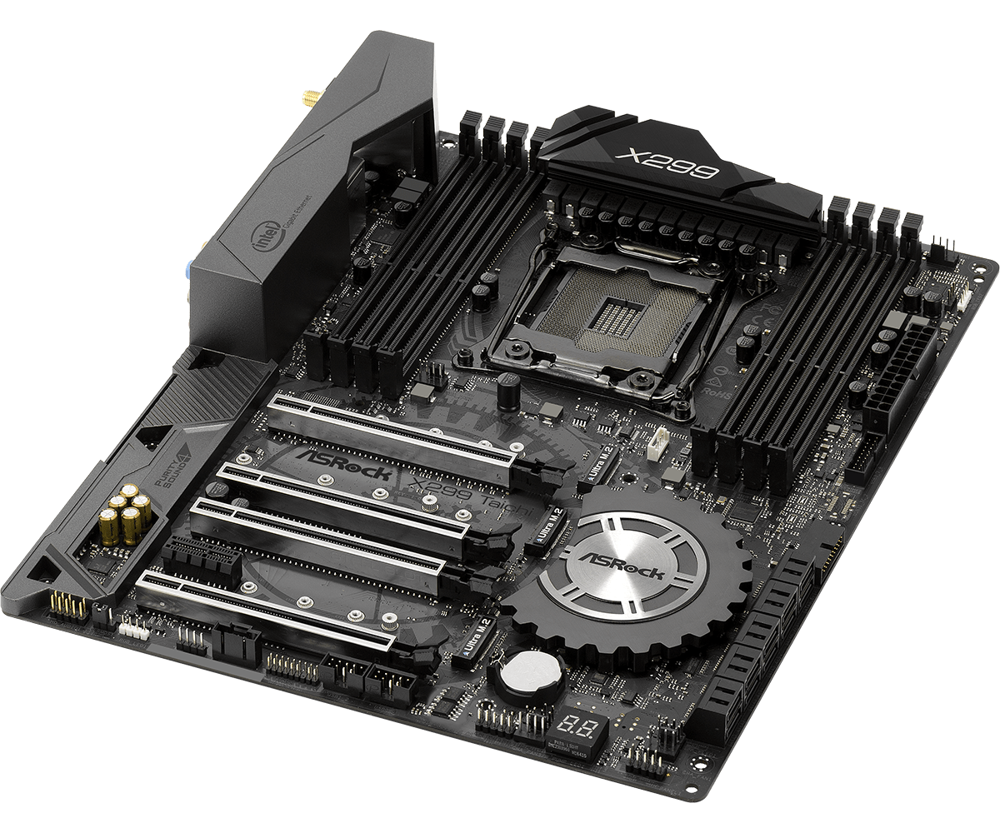

|
|
| CPU | RAM | MOTHERBOARD | GPU | PSU |
| FORM PEMBELIAN KOMPUTER DISINI!! |
MOTHERBOARD
|
Motherboard, atau papan induk, adalah komponen utama dalam komputer yang berfungsi sebagai pusat penghubung untuk semua komponen dan perangkat keras lainnya. Ia menyediakan jalur komunikasi antara prosesor, memori, kartu grafis, dan perangkat lainnya, serta mengintegrasikan berbagai fitur penting seperti slot ekspansi, port input/output, dan konektor untuk periferal. Dengan kata lain, motherboard adalah fondasi yang memungkinkan semua komponen komputer bekerja bersama dengan harmonis. Motherboard dilengkapi dengan berbagai slot dan konektor yang memungkinkan pemasangan dan konektivitas perangkat keras tambahan. Misalnya, terdapat slot untuk RAM, slot ekspansi seperti PCIe untuk kartu grafis dan perangkat lainnya, serta konektor untuk hard disk drive (HDD) atau solid-state drive (SSD). Selain itu, motherboard juga biasanya memiliki chipset yang mengelola komunikasi antara prosesor dan komponen lainnya, serta berbagai port untuk menghubungkan perangkat eksternal seperti USB, audio, dan jaringan. Fitur dan spesifikasi motherboard dapat mempengaruhi kinerja dan kemampuan ekspansi sistem komputer. Faktor-faktor seperti ukuran motherboard (misalnya ATX, microATX, atau Mini-ITX), jumlah dan jenis slot ekspansi, serta dukungan untuk teknologi terbaru seperti PCIe 4.0 atau memori DDR5, semuanya berperan dalam menentukan kompatibilitas dan potensi kinerja sistem. Oleh karena itu, memilih motherboard yang tepat sesuai dengan kebutuhan dan anggaran adalah langkah penting dalam merakit atau meng-upgrade komputer. |
 |